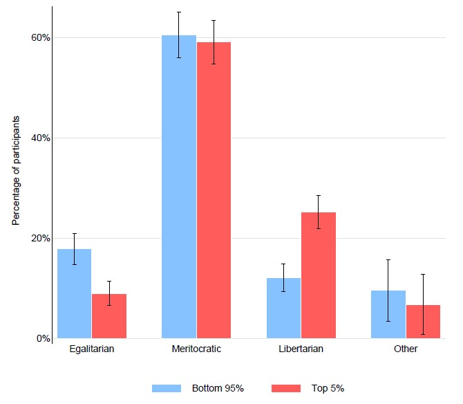

Why Do the Rich Oppose Redistribution?
A few weeks ago, I was lucky enough to be able to join a lecture held by Paul Smeets about the topic: “Why Do the Rich Oppose Redistribution?”. Smeets is an Associate Professor at the School of Business and Economics in Maastricht and a lot of his recent research deals with the behaviour of the rich, of the Top 5%.
To be frank, when I heard that question for the first time, I was a bit confused. Is it not quite obvious why millionaires and billionaires would oppose the fact of taking money away from them? Yes, it seems kind of trivial, but Smeets conducted research actually had some really interesting results. He did an experiment in the U.S., a country in which income and wealth inequality is even more predominant than in other western countries. Essentially, all participants were divided into two groups; those that belong to the Top 5% of the richest individuals in America and those that belong to the other 95%. Each participant was in control of redistributing money among individuals. Those individuals, where just workers doing a small assignment on a Crowdsourcing page. They obtained 1$ for sure but could get up to 6$ depending on the setup. There were three scenarios: one where the people who put more effort into the assignment got more money than those who put less effort into it, one where the reward was assigned randomly, and one where it was mixed. In all those scenarios, the participants were allowed to redistribute the rewards after they were assigned. Essentially, taking money away from one individual and giving it to others.
The amount of money redistributed heavily depended on the scenario. For example, in the luck-based scenario the amount of redistribution was generally higher, while the amount in the merit/effort case was overall low. Based on their behaviour, Smeets grouped the participants into different categories:
- Egalitarians, who implemented full equality in the merit scenario
- Libertarians, who did not redistribute any income to the unlucky workers in the luck scenario
- Meritocrats, who allocated more income to the better performing workers in the merit scenario, but who did not allocate more income to the lucky worker in the luck treatment

As we can see, the number of Egalitarians were twice as high among the 95%, while Libertarians where twice as large among the 5%. Additionally, Meritocrats were quite common among all participants, which I found really interesting.
The meritocratic belief seems to be still alive in the U.S, just as much among the “poor” as among the rich. I think it all falls back to the idea of the “American Dream”; that you can achieve anything if you just work hard for it. This American Dream seems to still exist in the mind of the people, even though America has a low equality of opportunity – at least compared to European countries. Social upward mobility is incredibly low, and we see examples in the news almost every other day how the poor are left behind in the United States of America. Another interesting observation was that new millionaires, thus people who did not inherit their wealth, were even more opposed to redistribution than people born into their wealth. All crashing down again on the fact that those individuals believe they gained their success through hard work and not luck; “If I made it, so can everyone else”.
I found this experiment and the insights it provided extremely interesting and I can recommend anyone, who would like to know more, to check out Paul Smeets’ research.
Photo from: Unsplash
Source: Cohn, A., Jessen, L. J., Klašnja, M., & Smeets, P. (2019). Why do the rich oppose redistribution?.